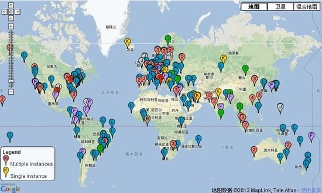

Mucha gente ha tenido sueños increíbles como destruir la Tierra o salvar el mundo, y no son pocos los que han amenazado con destruir Internet. Más allá de las bromas, nos preguntamos: ¿alguien podría realmente destruir Internet? En realidad, esto es físicamente posible.
Sin duda, si realmente destruyeras Internet, esto se convertiría en una hazaña terrorista en la historia de la humanidad y significaría declarar la guerra a todos los países del mundo. Así que, trata el siguiente contenido como un experimento mental.
En primer lugar, dejemos de tratar Internet como algo invisible e intangible; en realidad está compuesto por grandes cantidades de metal, plástico y fibra óptica. Su alcance se extiende por todo el mundo, como un monstruo mecánico que abraza toda la Tierra. Así que busquemos la base material de la red, a través de océanos y tierras, para descubrir qué se debería hacer exactamente.
Internet no tiene un interruptor general, ni un botón de autodestrucción, ni se ve afectado por cortes de electricidad. Gracias a su excelente diseño y a la constante exploración y mejora, Internet es casi indestructible. En el caso de las redes de fibra óptica, incluso si cortas la mayoría, las restantes seguirán transmitiendo y podrán reconfigurar automáticamente las rutas de transmisión, lo que garantiza conexiones fluidas entre continentes o países.
Sin embargo, como todo lo demás en la Tierra, si algo ha sido construido, siempre puede ser destruido. Es decir, con el suficiente esfuerzo, puedes destruir Internet por completo como quien tala un árbol, siempre que sepas por dónde empezar a cortar.
Primer paso: Cortar los cables de fibra óptica

Diagrama de ubicación de los cables submarinos de fibra óptica
Internet existe gracias a decenas de miles de metros de cables gruesos y desgastados que lo conectan. Los largos cables submarinos conectan los continentes y hacen del mundo un todo. Como se mencionó antes, las conexiones de fibra óptica pueden apoyarse mutuamente; cuando uno se rompe, otro asume la tarea. Entonces, ¿y si los cortáramos todos?
Internet es una red llena de cables. Las computadoras del hogar, los equipos de la oficina y los servidores en el extranjero están conectados a través de estos cables. Si cortamos estas conexiones, la red no podrá comunicarse a través de los océanos. Internet se rompería al instante.
En esta página se puede encontrar cada cable principal de Internet en todo el mundo.
Estos cables submarinos a veces están camuflados o parcialmente enterrados. Pero otras veces están expuestos en las playas como tablas de surf abandonadas. Para los cables enterrados bajo la arena, puedes usar un localizador de cables como este para encontrar su ubicación exacta.
Aunque la ubicación exacta de muchos cables de fibra óptica y sus puntos de aterrizaje no son públicos, en realidad siempre se pueden ver en algunas costas famosas y ciudades concurridas.
Si se destruyeran los siguientes tres puntos de cable, las consecuencias serían muy graves. La destrucción de un punto solo causaría ralentización y obstrucción, pero no una parálisis total. Sin embargo, los sitios al otro lado del océano se volverían inmediatamente inaccesibles, y muchos otros sitios web serían demasiado lentos para poder usarse. Internet seguiría funcionando de forma caótica y lenta, pero después de todo, es un buen comienzo.

De arriba a abajo: Mastic Beach en Long Island, Manahawkin en el estado de Nueva York y Tuckerton en el estado de Nueva York.
Estos sitios conectan la costa este de Estados Unidos con Europa occidental; son algunos de los puntos de infraestructura más densos e importantes del mundo. Si se destruyen estos puntos de conexión, la economía global se derrumbaría.
Además de los 3 sitios mencionados, hay otros lugares que más podrían debilitar las conexiones de Internet: Singapur / Egipto (Mar Mediterráneo y Mar Rojo) / Sudoeste de Inglaterra / Tokio / Hong Kong / Sur de Florida / Sicilia / Bombay / Chennai. Si se destruyen los sitios en estos lugares, Internet dejaría de ser un todo global; cada continente e isla quedaría aislado.
Segundo paso: Destruir los servidores raíz
El servidor M es operado por WIDE Project, ubicado en Seúl.
La entrada de un nombre de dominio es en realidad el resultado de la conversión de un campo de IP. Por ejemplo, la dirección IP de "Google.com" es 74.125.228.37. Pero hay miles de sitios web, y la dificultad de recordar direcciones IP hace que este proceso de conversión sea indispensable.
Actualmente hay 13 servidores raíz de nombres de dominio en todo el mundo, denominados de "A" a "M", que se encargan de la resolución de direcciones IP y nombres de dominio. Si estas máquinas quedan inoperativas, para navegar por Internet solo habría que memorizar números.
¿Cómo encontrar y destruir estos servidores? Al igual que los cables de fibra óptica anteriores, estos servidores también son un secreto a voces.

Mapa de distribución global de servidores de nombres de dominio. Además de los 13 servidores raíz, hay una gran cantidad de otros servidores de nombres de dominio.
Por ejemplo, si quisiéramos destruir el servidor "K", que es operado por una empresa llamada RIPE NCC. Ve al sitio web de la empresa y usa Google Maps para encontrar la ubicación del servidor. Sin embargo, entrar realmente sería extremadamente difícil; te imaginas lo estricta que es su seguridad. Las ubicaciones de los 13 servidores raíz son consultables.
Tercer paso: Destruir los centros de datos

Centro de datos
Después del primer paso de cortar los cables de fibra óptica, la información ya no podría transmitirse a nivel mundial, y cada lugar se convertiría en una isla aislada. Además, al destruir los servidores raíz, las direcciones de red se convertirían en direcciones IP irresolubles. Solo quedaría un paso más para destruir Internet: volar los centros de datos.
Los centros de datos son edificios muy discretos que albergan los servidores que nos permiten navegar por sitios web, enviar y recibir correos electrónicos, chatear y jugar. Estos edificios suelen ser altos y grandes; como no están diseñados para personas, la mayoría no tiene ventanas. Las salas que contienen las máquinas suelen estar oscuras y se mantienen a bajas temperaturas para que las máquinas funcionen correctamente.
60 Hudson Street, Nueva York
El edificio en 60 Hudson Street en Nueva York es un centro neurálgico clave de la Internet global: el noveno piso de este edificio tiene 1394 metros cuadrados y es el punto de convergencia de cables de fibra óptica de múltiples capas, tanto locales como de todo Estados Unidos y globales. Servidores, datos de almacenamiento y equipos de red se conectan aquí; una serie de interfaces ópticas, cables coaxiales, etc., se conectan con otras redes a través de una serie de paneles de conexión. Un centro de datos como este es el centro físico de Internet; en esencia, es un enorme conmutador de Ethernet.
Si se pudiera destruir este piso, las conexiones de toda la región se romperían y la conexión a Internet a nivel mundial también se vería afectada. No solo ciertos sitios web desaparecerían; los datos que algunas empresas almacenan en el centro de datos también se perderían, y todas las fotos o canciones que hayas subido podrían dejar de existir.
Hay muchos centros de datos como este en todo el mundo. Actualmente China tiene 9 centros de datos de alojamiento: 2 en Pekín, 4 en Shanghái, y uno en Chengdu, Zhejiang y Shenzhen respectivamente.
Fin del juego
Ahora los datos están completamente congelados. Todas las carreteras, puentes y semáforos han sido destruidos; los datos no pueden ir a ninguna parte. Lo que queda son algunas redes de área local; son redes, pero ya no son Internet. En este punto, Internet ha sido destruido con éxito. Fin del juego.
De lo anterior podemos ver la fortaleza y la fragilidad de Internet. Por supuesto, nadie podría atacar todos los nodos de Internet en la Tierra al mismo tiempo; incluso si un equipo de miles de personas lo intentara, la velocidad de reparación probablemente superaría a la de destrucción. Nuestro objetivo no es destruir Internet realmente, sino ver a través de esto la complejidad y lo interesante de la infraestructura de Internet.
(Artículo traducido del sitio web Gizmodo: How to Destroy the Internet, autor: SAM BIDDLE)
(Fuente de este artículo: Southern Weekly)